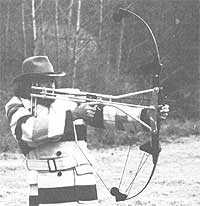
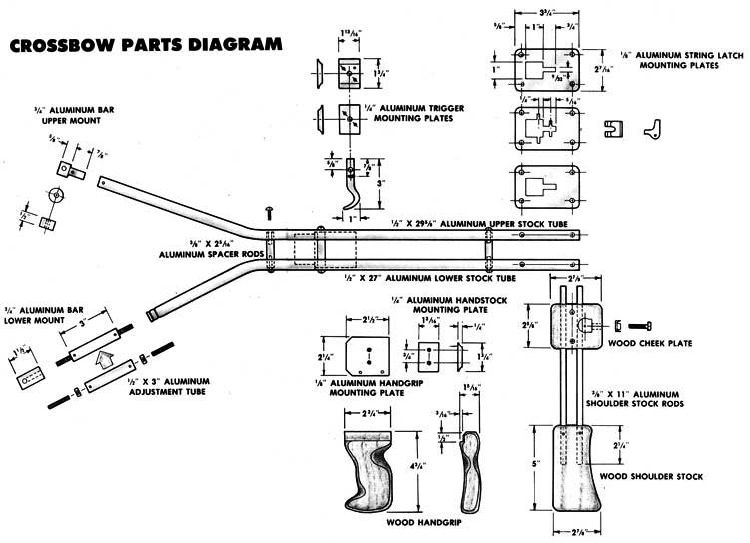
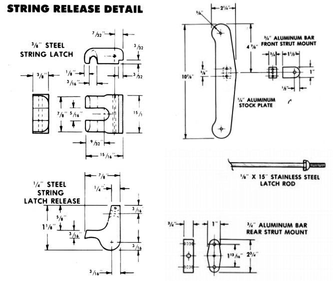
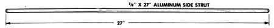

It’s a common myth that the crossbow of the Middle Ages was a far superior weapon to the bows of the time. In fact, in the hands of a skilled archer, the medieval longbow was more accurate, had longer range, and could deliver more arrows in a given period of time. The crossbow was popular largely because it stayed in the cocked position without strain on the archer. Because arrow (or bolt, in crossbow parlance) release was always the same, accuracy was easier, too. In short, the crossbow required less skill to shoot.
As a result, when firearms replaced bows as weapons of war, the all-wood longbow became the mainstay of sport archers and hunters, and the crossbow became a sinister weapon non grata.
Recently, interest in the crossbow has rekindled because of improvements in performance made possible by blending composite materials and compound (aided by pulleys or cams) bow technology. In our September/October 1984 issue, we told you how to build a simple crossbow (one that differs little in basic design from those used nearly a millennium ago) and related that the performance of even commercial versions of this design was mediocre. By contrast, this compound crossbow has very high arrow speed, reasonable range, and accuracy comparable to that of a modern bow. It's also sophisticated and complicated.
To get the best of compound bow technology and crossbow ease of use without complex construction, we’ve married a stock-and-trigger system to a storebought compound bow-in this case a Bear Whitetail Hunter. The system bolts to existing holes on the bow, so it can be attached and removed easily without modifying the bow itself. Many bows, including most in the Bear and PSE lines (and others), have threaded holes (or a series of slots) 9 3/4 inches apart for mounting the stock. Some, however, such as Browning bows, can't be fitted.
To keep the assembly’s weight within reason, it’s essential that you use aluminum for most of the hybrid crossbow’s parts. Tubing available from hardware stores works well, because it can be cold-formed. Though more sophisticated alloys would be stronger, the heating procedure used to bend the harder material is beyond most tinkerers’ capabilities. With the added support of the side strut, this tubing is strong enough to handle the stress exerted by the 65-pound-draw compound bow (probably less than 45 pounds at full draw). If you plan to attach the mechanism to a more powerful bow, you should consider using a more rigid material. We used 6061 T6 aluminum plate for the flat parts, but 2024 T3 would also work well.
The handgrip, cheek plate, and shoulder butt on our crossbow were carved from walnut, but any hardwood that can worked with a file would be suitable.
Building the compound crossbow really isn’t difficult, but it does require a fair amount of handwork with a file. A 1/2-inch rat-tail works best for rounding the trigger and handgrip mounting plates to fit the stock tubes. You’ll need a selection of smaller rattails and small flat and triangular files to shape the trigger and release mechanisms. Note that the drawing shows rounded edges on the string latch.
It’s easy to adjust the stock’s dimensions to suit your draw, stature, and bow configuration. If you’re an accomplished archer, you already know what your draw is and should set the string latch release to be that distance from the front of the arrow rest. If you’re purchasing a bow to adapt a crossbow stock to, your archery shop should be able to help you figure out your draw. Other dimensions, such as the handgrip position, can be changed after assembly, but it’s best not to make repeated adjustments that would wear the parts.
There’s a trick to setting the left-handed hex nut in the lower stock tube. First, pound it into the end of the tube with a hammer, and then use the turnbuckle bolt to pry it back out again. Place some high-strength epoxy into the tube end, push the nut back in, and then deform the tube on each side of the nut with a dull tubing cutter.
The threads on the stainless-steel trigger rod are likely to be difficult to form. Choose a die that does little more than score the rod, and use multiple nuts for security.
Sighting in the compound crossbow will be easy, but the procedures are a bit different from those used in normal archery. You can actually get the crossbow's adjustment in the ballpark without shooting an arrow. Start by adjusting the turnbuckle on the lower stock to place the string’s nock-point in the center of the string latch. Assuming that the nock was correctly positioned to begin with, you'll be close to right for the crossbow. To make the horizontal adjustment, sight from the string latch forward past the string toward the arrow rest, and move the cheek plate in or out with the four machine screws to place the string latch in line.
With the rough adjustment made, shoot a few arrows-starting at very close range and moving back-and watch their flight. (A friendly observer would be helpful.) If there’s vertical misalignment, the arrow will porpoise up and down; a horizontal problem will show up as fishtailing sideways; and if both adjustments are out, the arrow will wobble in a circular pattern.
The compound crossbow deserves special attention to safety, since arrow release isn’t as intimately controlled as it is with a regular bow. Cock the bow and place an arrow only when you’re ready to shoot: There is no “safety” on the trigger, nor is there any guard to protect the trigger from an accidental bump. Even when there’s no arrow in place, don’t grasp the stock from the string side. If the string released accidentally, it could severely abrade your arm.
You’ll quickly find that it's easy to shoot accurately with the crossbow. The stock and spring latch take all the strain of the draw.
The Hybrid Compound Crossbow will let you get a new and interesting use from your bow out of hunting season. And for the handicapped, it’s perhaps the only way to enjoy the sport of archery.
|
 KEN FORSGREN |
 |
 |
|
 |
|
|